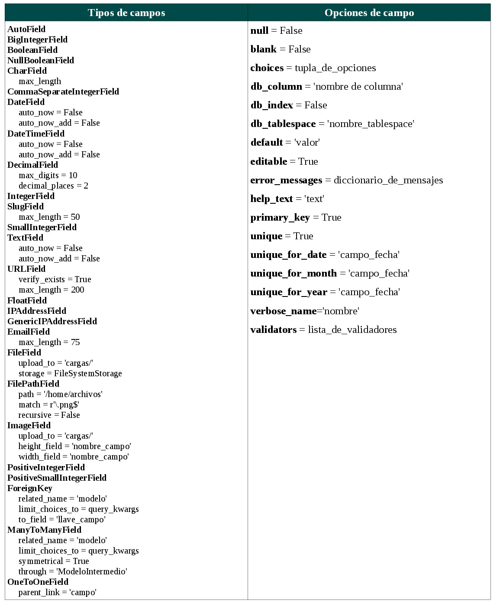

Un modelo es la representación de los datos de nuestra aplicación. Contiene los campos básicos y el comportamiento de los datos que serán almacenados. Por lo general, cada modelo se convierte en una tabla de la base de datos.
Cada modelo es una subclase de django.db.models.Model
Cada atributo de un modelo representa a un campo de una tabla
Django automáticamente nos da acceso a la base de datos
Los modelos nos van a permitir manipular los datos: registrarlos, editarlos, actualizarlos, consultarlos, eliminarlos y realizar procesos con ellos. Toda está manipulación se reflejará luego en las vistas y posteriormente en las plantillas para mostrar los resultados en el navegador, esta manipulación se le conoce generalmente como: Consultas.
Los tipos de campo y las opciones de los mismos se presentan en la siguiente figura. Una descripción más extensa de los mismos puede ser encontrada aqui.

Tipos de campo para el modelo de Django
El modelo en el proyecto recetario
Una forma de enteneder mejor los conceptos englobados por el modelo es ponerlos en práctica. Siguiendo con el ejercicio del recetario.
Sin emabrgo, hasta ahora en models.py teniamos algo como:
from django.db import models
class Bebida(models.Model):
nombre = models.CharField(max_length=50)
ingredientes = models.TextField()
preparacion = models.TextField()
def __unicode__(self):
return self.nombre
La clase Bebida fue solo una forma de poner en funcionamiento el proyecto. A partir de este momento pierde importancia para dar lugar a la clase receta, en cuya definición queda descrita la fiunción de cada una de las partes que la conformarán. Así:
#-*- coding:utf-8 -*-
#importa clases con la descripción de modelos
from django.db import models
#llama al modelo usuario
from django.contrib.auth.models import User
class Bebida(models.Model):
nombre = models.CharField(max_length=50)
ingredientes = models.TextField()
preparacion = models.TextField()
def __unicode__(self):
return self.nombre
class Receta(models.Model):
#Dato cadena, longitud máxima 100 y único
titulo = models.CharField(max_length=100, unique=True)
#Dato texto, con texto de ayuda
ingredientes = models.TextField(help_text='Redacta los ingredientes')
#Dato texto, con nombre: Preparación
prepacion = models.TextField(verbose_name='Preparación')
#Dato imagen, se almacenarán en la carpeta recetas, titulo: Imágen
imagen = models.ImageField(upload_to='recetas', verbose_name='Imágen')
#Dato Fecha y Hora, almacena la fecha actual
tiempo_registro = models.DateTimeField(auto_now=True)
#Enlace al modelo Usuario que Django ya tiene construido
usuario = models.ForeignKey(User)
def __unicode__(self):
return self.titulo
La clase Receta (modelo) tiene un atributo imagen, el cuál está direccionando las cargas que haga el usuario a la carpeta ‘recetas’ (carpeta que estará dentro de otra llamada: ‘carga’), para que esto funcione debemos modificar nuestro archivo settings.py, exactamente debemos buscar la línea: MEDIA_ROOT, y dejarla así:
Luego de haber puesto esta línea, debemos crear una carpeta que se llame ‘carga’ dentro de la carpeta del proyecto.
Dentro de esta carpeta ‘carga’ aparecerá una carpeta ‘recetas’ al momento de guardar un registro. Pero antes de ello debemos buscar el archivo admin.py y dejarlo asi:
from principal.models import Bebida, Receta
from django.contrib import admin
admin.site.register(Bebida)
admin.site.register(Receta)
Esto nos permitirá agregar el modelo Receta dentro de la interfaz administrativa.
Por último debemos habilitar las URL para poder visualizar las imágenes, para ello debemos dejar el archivo urls.py asi:
from django.conf.urls import patterns, include, url
from django.contrib import admin
from django.conf import settings
admin.autodiscover()
urlpatterns = patterns('',
url(r'^$','principal.views.lista_bebidas'),
url(r'^admin/doc/', include('django.contrib.admindocs.urls')),
url(r'^admin/', include(admin.site.urls)),
url(r'^media/(?P.*)$','django.views.static.serve',
{'document_root':settings.MEDIA_ROOT,}
),
)
Esto nos permitirá acceder a las imágenes que subamos desde http://127.0.0.1:8000/media/recetas/nombre-imagen.jpg (o cualquier otra imagen).
Poniendo a correr todo
Para hacer funcionar todo, debemos sincronizar la base de datos nuevamente (esto se debe hacer cada vez que se modifique el modelo).
python manage.py syncdb
En caso de que queramos modificar un modelo ya existente podemos también reiniciar todos los modelos de la aplicación principal así:
python manage.py reset principal
Sin embargo si ya se tienen datos almacenados estos se perderán al momento de reiniciarlos, para evitar eso podemos usar aplicaciones como South, que nos permitirán trabajar con los datos de manera más profesional.